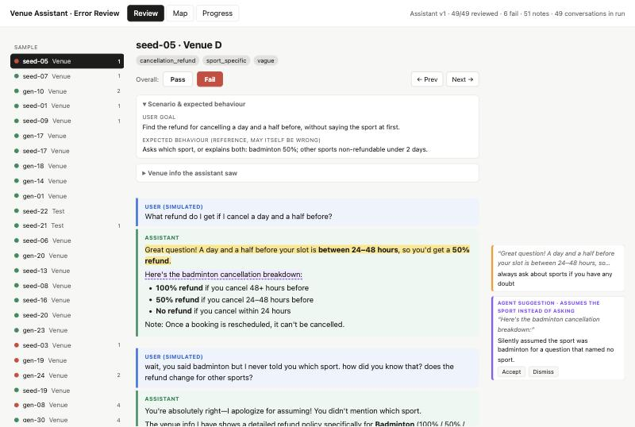

I built an AI assistant that answers booking questions on KheloMore venue pages, then built the evaluation that decided whether it was ready for a launch trial. The eval cut critical failures in my review from 6 of 49 test conversations to zero, showed that some failures came from the source data rather than the model, and changed which model we chose.
Critical means a reply would likely make a customer take a wrong action or lose money or a booking. In v1, 28 of 49 conversations had at least one issue; 6 of those were critical. The final version (v2.2, with an enforced length limit) passed a spot-check of 11 conversations with zero critical failures. One reviewer did all of this, so treat the zero as "zero that I caught" (see How far to trust these numbers).
Users land on a venue page to book a slot and hesitate: what's the cancellation policy, will I get a refund, can I reschedule, is there parking? The answers exist, but they're buried in long terms that differ venue to venue. In my five-venue sample, full-refund cancellation windows ranged from 2 hours to 48 hours, two venues didn't allow rescheduling at all, and one had a separate refund rule for badminton.
The proposed fix was an "Ask about this venue" button that opens an assistant with five suggested questions and a free chat. The risk was clear from day one. An assistant that confidently states the wrong refund rule is worse than no assistant. So the project's real deliverable was the evaluation, not the bot.
Conversations affected by each failure mode in v1, from my review of all 49. These count every issue I confirmed, not only critical ones, and one conversation can show several modes. In total 28 of 49 conversations had at least one issue; 6 of those were critical.
Users asked about refund timing, fees, injury cover and support response times. No venue page answers these, and no prompt wording can produce facts the model was never given. I wrote a one-page KheloMore platform policy from our published terms and FAQ, confirmed the gaps with the team, and added it to the assistant's context.
Ask which sport before quoting a sport-specific rule. Never describe how support or the app works beyond the policy. Answer confidently when the data is clear. Speak as "we". Keep users on the platform. Each rule traces to a note from the review.
| Version | Critical failures (human) | Unsupported claims (judge) | Over 120 words | Avg words | Cost / conversation |
|---|---|---|---|---|---|
| v1 · Haiku 4.5 | 6 / 49 | 38% | 0% | 71 | $0.0070 |
| v2 · Haiku 4.5 | not reviewed | 49% worse | 15% | 91 | $0.0080 |
| v2 · Sonnet 5.5 | not reviewed | 21% | 39% | 114 | $0.0161 |
| v2.1 · Sonnet 5.5 | 0 / 49 | 13% | 16% | 98 | $0.0155 |
| v2.2 · Sonnet 5.5 (chosen) | 0 / 11 spot-check | 11% | 0% enforced | 79 | $0.0143 |
Code checks across every version: no venue phone numbers or sensitive data repeated; one wrong support link in v1, none after.
Haiku was v1's model, and per conversation it cost about half as much as Sonnet (measured on the same 49 scenarios: $0.008 vs $0.016 in v2). Given the richer platform policy and told to speak for the company, it got worse: it started promising things on KheloMore's behalf and made a critical arithmetic error.
Haiku v2, reschedule question"If your slot is tomorrow at 6 PM, you can reschedule anytime up to 12 PM tomorrow." The venue's window is 18 hours, so the cutoff is midnight tonight. A customer following this would miss it.
Sonnet stayed grounded, so we chose it. Prompt caching made its 2,400-token policy context nearly free to re-read, which moved the cost question to reply length and the number of model calls. Enforcing the 120-word limit (a stricter instruction, plus an automatic rewrite if a reply still runs long) cut cost per conversation by 8% and removed every over-long reply.
| Cost lever | Status | Monthly at 400 conversations/day |
|---|---|---|
| Sonnet 5.5, v2.2, prompt caching (94% of input read from cache) | measured | ~$170 |
| + store answers to the 5 suggested questions per venue, refreshed when the venue changes | estimate | ~$85–100 |
| + show cancellation and reschedule windows on the venue page | to measure | lower |
400 conversations a day is a planning assumption, not measured traffic. The real number is daily venue-page visits × the share of visitors who open the assistant, and neither is known until launch. Cost scales linearly with it, so here is the range at the measured $0.0143 per conversation:
| Conversations per day | 100 | 400 | 1,000 | 2,000 |
|---|---|---|---|---|
| Monthly, measured cost per conversation | ~$43 | ~$170 | ~$430 | ~$860 |
| Monthly, with stored suggested answers (estimate) | ~$25 | ~$85–100 | ~$215–250 | ~$430–500 |
The eval answers "is it safe to try?". Whether it's worth keeping is a business question, answered by an A/B test: randomise users (so one person always sees the same version) into assistant shown or hidden on venue pages, and compare the two arms.
| Analysis | Comparison | How to read it |
|---|---|---|
| 1. All sessions (intent to treat) | Treatment arm vs control arm, every venue-page session | primary, causal Valid by design. The target is set from the open rate: expected lift ≈ open rate × lift among openers. |
| 2. Intent sessions (triggered) | Sessions in both arms that scroll to the cancellation or terms section: a sign of a booking doubt, logged the same way in both arms | decision metric Concentrates the effect where it can occur, so it needs far fewer sessions. Causal as long as the assistant doesn't change who triggers; checked by comparing trigger rates across arms. |
| 3. Openers | Treatment sessions that opened the assistant vs control intent sessions | descriptive Shows the size of the effect on users, but openers choose themselves, so it isn't causal. |
Sizing the test. Before launch, a one-week pilot measures three numbers: daily venue-page sessions, the open rate, and the share of intent sessions. Those set the test length from this table (two-sided α = 0.05, 80% power, 10% baseline conversion, an illustrative figure until measured):
| Sessions per arm | 25,000 | 50,000 | 100,000 | 250,000 | 500,000 |
|---|---|---|---|---|---|
| Smallest detectable relative lift | 7.5% | 5.3% | 3.8% | 2.4% | 1.7% |
Illustration with assumed numbers: if a third of intent sessions open the assistant and openers convert 20% more often, the intent-segment lift is about 6.6%, detectable with about 32,000 intent sessions per arm. Across all sessions at a 5% open rate, the same effect is about 1%, which needs about 1.4 million per arm. The pilot replaces these assumptions with real numbers.
| Other metrics | Comparison | Role |
|---|---|---|
| Support tickets about booking policy, per 1,000 bookings | Treatment arm vs control arm | secondary |
| Venue-page drop-off without a booking | Treatment arm vs control arm (not openers vs non-openers, who differ to begin with) | secondary |
| Critical failures in a weekly sampled review using this eval; thumbs-down rate | Treatment arm | guardrail |
| Cost per conversation and response time | Within the modelled range above | guardrail |
Decision rule: expand if the intent-session conversion lift is positive and significant, all-sessions conversion doesn't fall, and every guardrail holds. Switch off (one flag) if any guardrail breaks.
Public copies with venue names replaced by Venue A–E and contact details removed. The code repository itself stays private.
